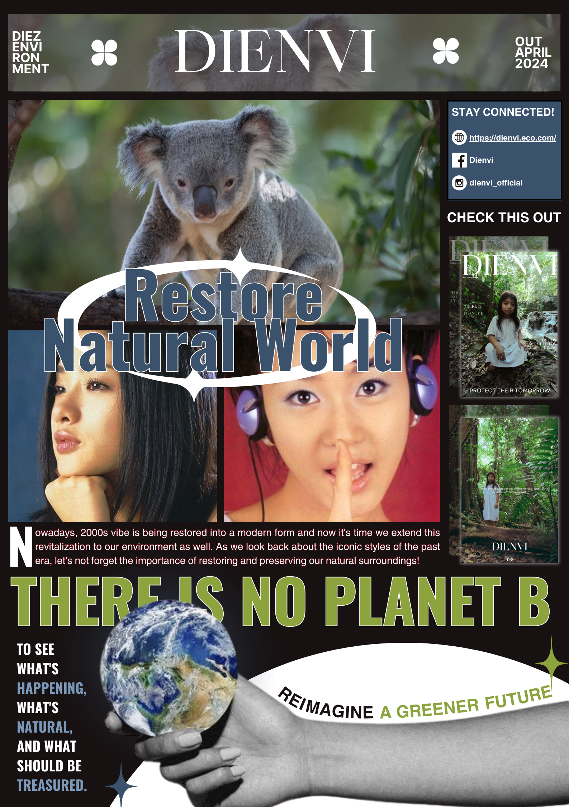

"RESTORE"
This magazine-style infographic shows the importance of environmental conservation. Inspired by the 2000s trend popular at the time, the layout connects with its target audience through a relatable and engaging presentation of its advocacy. Supporting images and visual elements help explain the message and maintain the chosen theme.
April 11, 2024